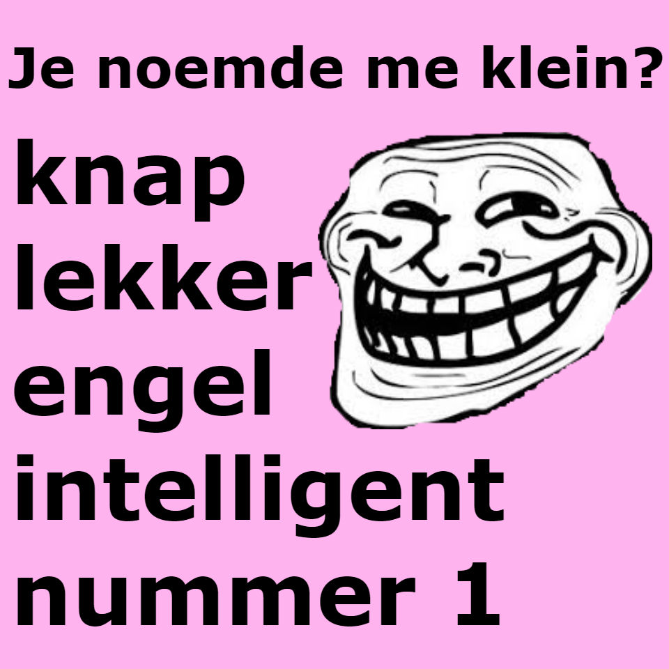
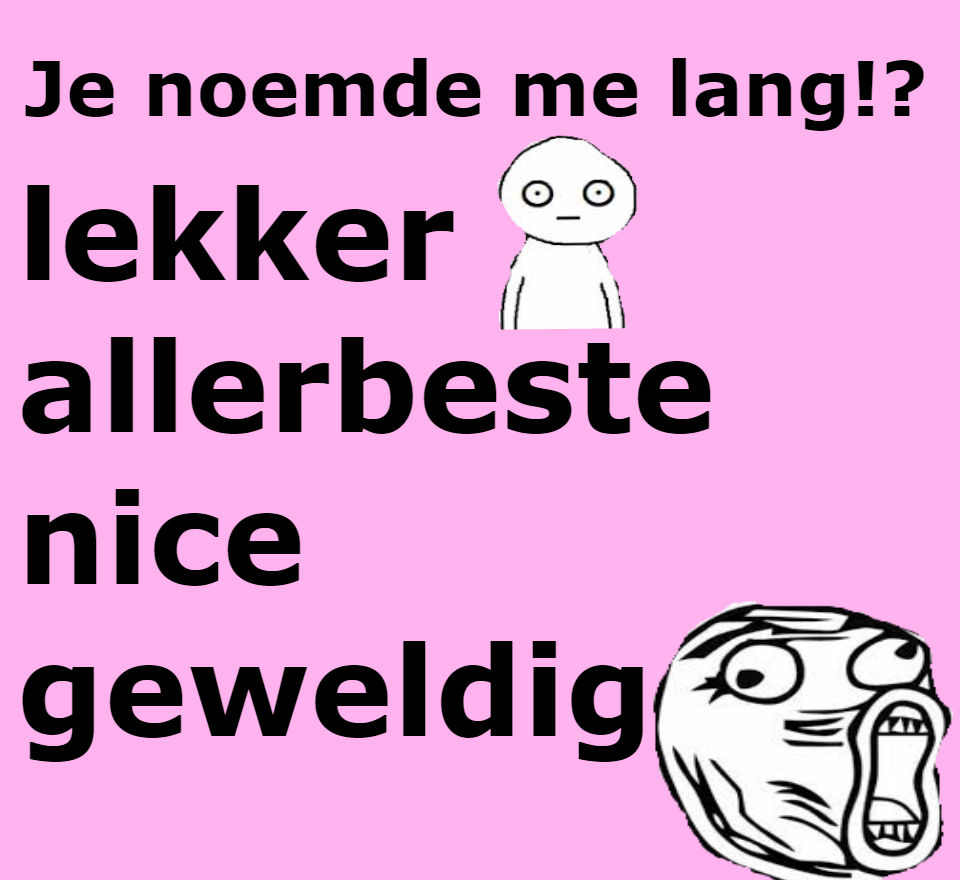

lange woordgrappen
- langzaam
- langdradig
- allang
- slang
- verlang
- langdurig
- langetermijn
- langslopen
- langwerpig
- tijdenlang
- hoognodig
- hooggebergte
- hooggegrepen
kleine woordgrappen
- Kleineren
- Kortaf
- Laag bij de grond
- Kort door de bocht
- Kleinschalig
- Kortademig
- Kortdurend
- kortetermijn
- korting
- kortom
- binnenkort
- laagontwikkeld
- kleinigheidje

kleine grappen
- Ik ben klein, omdat ze gewoon minder nodig hadden om mij mooi te maken.
- Kleine dingen zijn het leukst.
- We moeten de kleine dingen in het leven waarderen.
- Waarom ik zo klein ben?
Onkruid groeit sneller dan een bloem.
- Ik ben niet klein!
Ik hou gewoon van de aarde.
lange grappen
- Het weer hier boven is zo veel mooier.
- Lang leve de lange mensen!
- Ken je het gevoel dat je ergens niet bij kunt? Hahahah ik ook niet!
- Dat mooie moment wanneer je voor een klein iemand gaat zitten.
- Wanneer je je kleine vrienden als steun kunt gebruiken.
kleinere grappen
- Wanneer mensen je niet zien, omdat je klein bent.
- Wanneer je een stoel pakt om ergens bij te kunnen en er vervolgens nog steeds niet bij kunt.
- Hakken dragen en vervolgens nog steeds kleiner zijn dan de meeste mensen.
- Mensen die denken dat je een kabouter bent.
langere grappen
- Altijd maar weer je hoofd stoten.
- Wanneer je altijd moet bukken voor foto's, omdat de rest kleiner is.
- Altijd uitkijken voor vliegtuigen, omdat je bang bent dat ze tegen je aan vliegen.
- Mensen die denken dat je goed bent in basketbal, terwijl je niet eens weet wat een basket is.